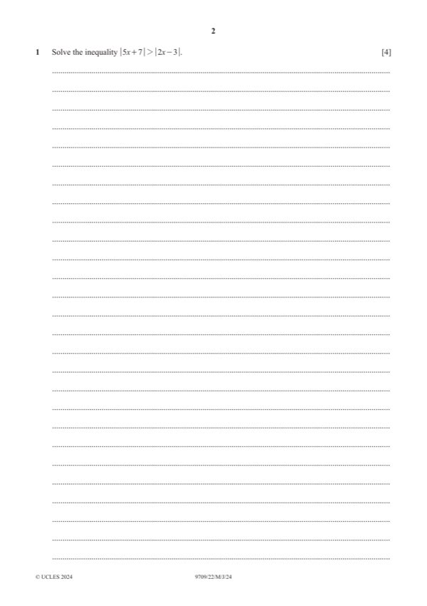

Question 1

Original paper page 2
Part 1 — solution
- [B1] Or inequality
- [M1] Or inequality
- [A1] Obtain/use: Obtain 74
- [A1] A0 if ‘… and …’ used
- [B1] ) Or inequality
- [M1] ) Or inequality
- [A1] Obtain/use: Obtain 103 and 74 (
- [A1] ) A0 if ‘… and …’ used
Mark points
- [B1] Or inequality
- [M1] Or inequality
- [A1] Obtain/use: Obtain 74
- [A1] A0 if ‘… and …’ used
- [B1] ) Or inequality
- [M1] ) Or inequality
- [A1] Obtain/use: Obtain 103 and 74 (
- [A1] ) A0 if ‘… and …’ used
Part 1 — solution
cosec 2
sin 2
Mark points
- Include the ideas shown in the solution above.
Part 1 — solution
- [A1] Answer given – necessary detail needed
Mark points
- [A1] Answer given – necessary detail needed